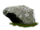

An obejctive based game where the goal is to collect as many woodsprites as possible and avoid the boulders.
Start by showing the Hiro Marker in the frame.
Using the marker, navigate Neytiri around the screen to collect the woodsprites!
To Collect:
To Avoid:

If the marker is out of the picture, the user will be notified. If you accidentally collect 5 or more boulders, the game will end!